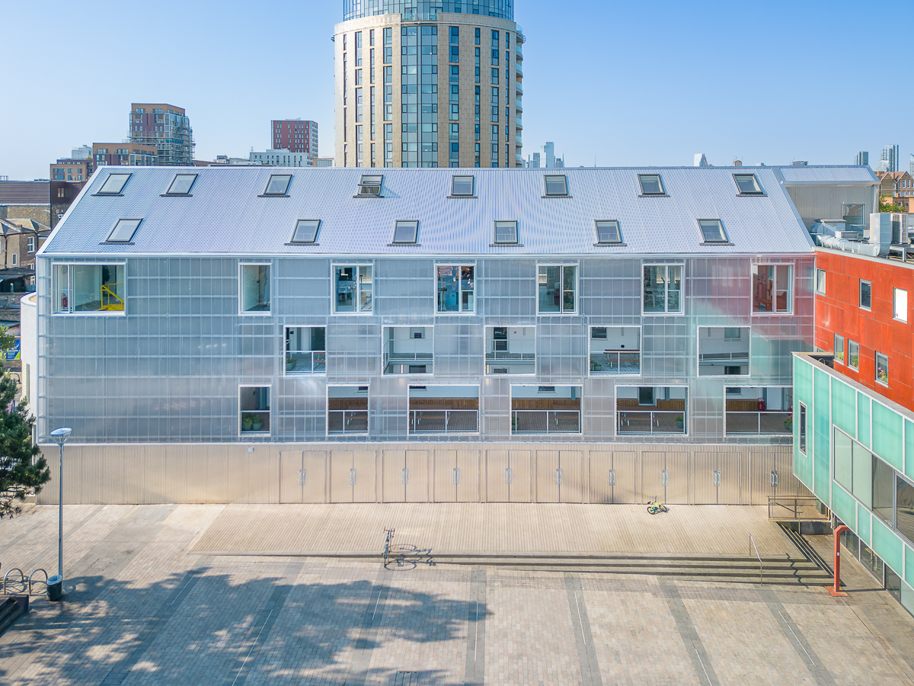
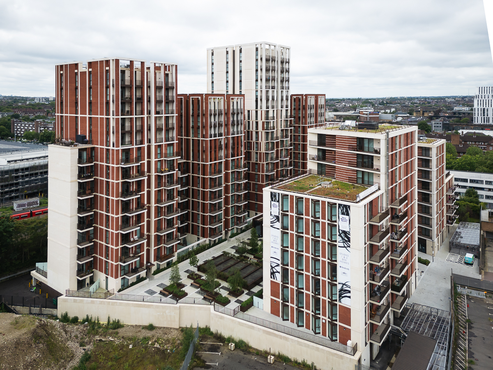
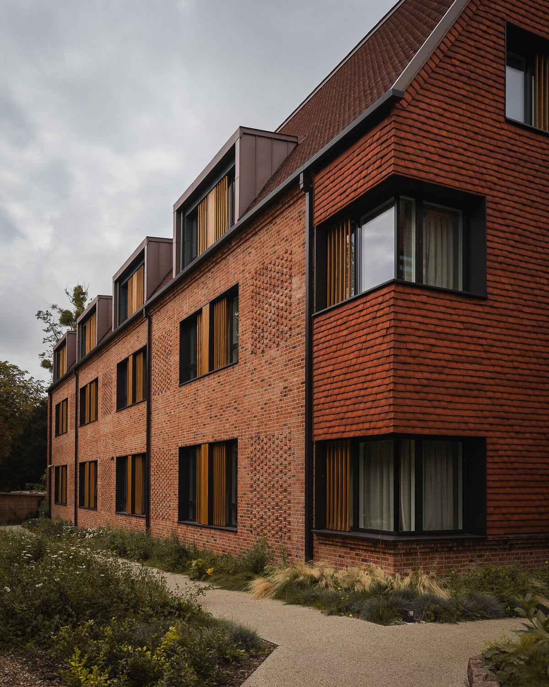
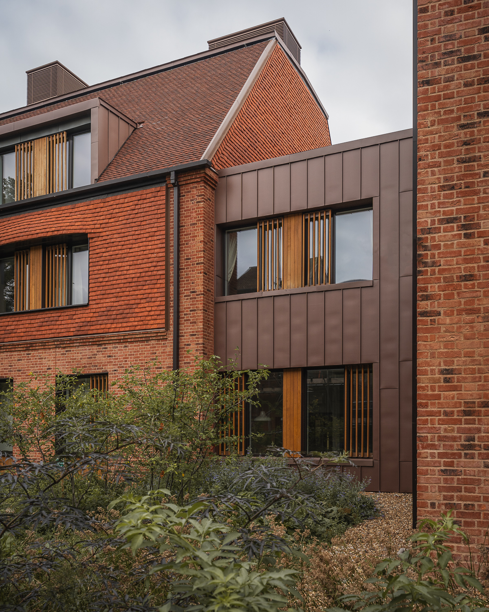
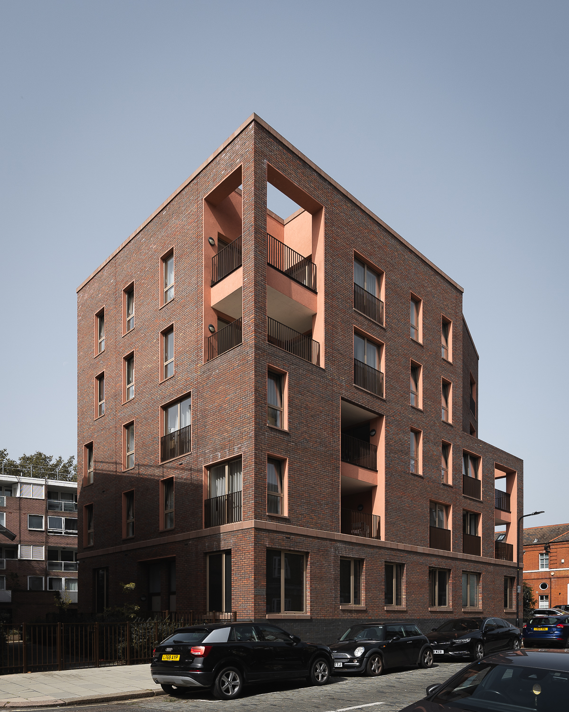
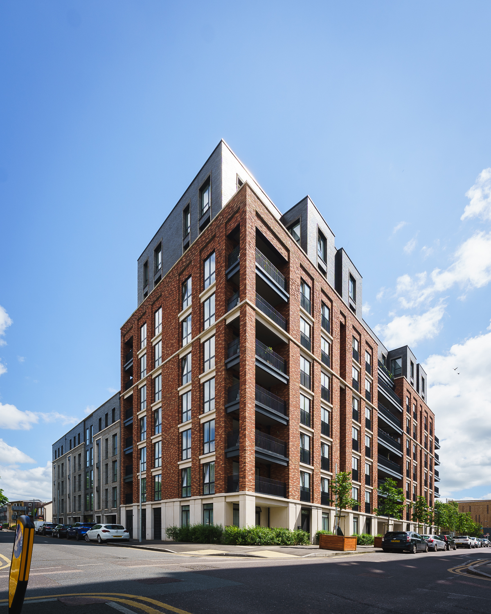
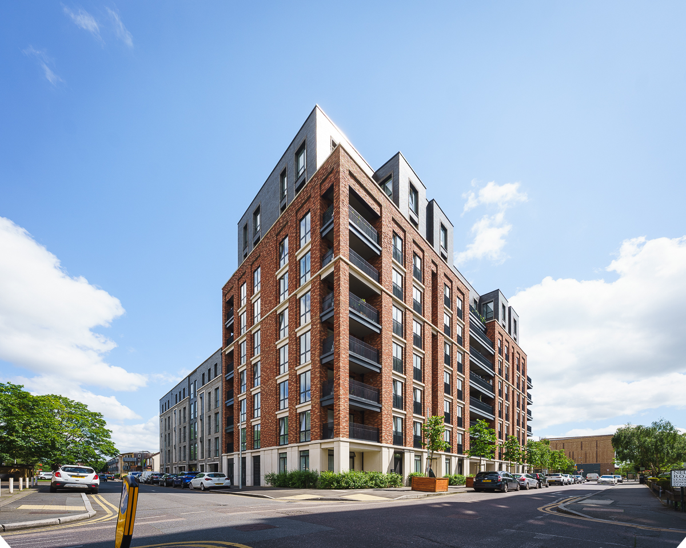

Works
Portfolio
Architectural Photography
Portfolio
Overview:
My approach, designed to resonate with human perception, eliminates convergence to prioritize geometric form and create depth through light and shadow, rather than relying on traditional perspective.
Key Skills & Techniques:
- Composition & Framing: Utilizing leading lines, symmetry, rule of thirds, and other compositional techniques to create visually compelling and balanced images, emphasizing geometric relationships within the frame.
- Understanding of Light: Employing natural light effectively to enhance the architectural details, creating depth and dimension through light and shadow rather than relying on perspective. This includes understanding the impact of different times of day and weather conditions.
- Perspective Control: Utilizing perspective correction techniques (both in-camera with tilt-shift lenses and in post-processing) to eliminate converging lines, maintaining accurate representations of architectural forms and prioritizing geometric accuracy by presenting the building's true proportions.
- Post-Processing: Use of post-processing software for color correction, HDR merging, sharpening, precise perspective correction to achieve a polished and professional final image.
Equipment:
I use a Sony full-frame system with a variety of prime and wide-angle zoom lenses. I also have extensive experience with Canon full-frame systems and possess a strong understanding of professional lenses crucial for architectural photography, including tilt-shift optics for perspective correction.Projects/Examples:
Building Name: Kindred House
Location: Croydon, London
Building Name: Bradbury Works
Location: Dalston, London

Building Name: Tower Court
Location: Hackney, London

Building Name: Bethesda Power Station
Location: London

Building Name: Lucy Cavendish
Location: Cambridge



Building Name: Kentmere
Location: Regent's Park Estate, London
Building Name: Dove Court
Location: Girton
Building Name: High Path
Location: Merton

Building Name: 291 Hills Road
Location: Cambridge